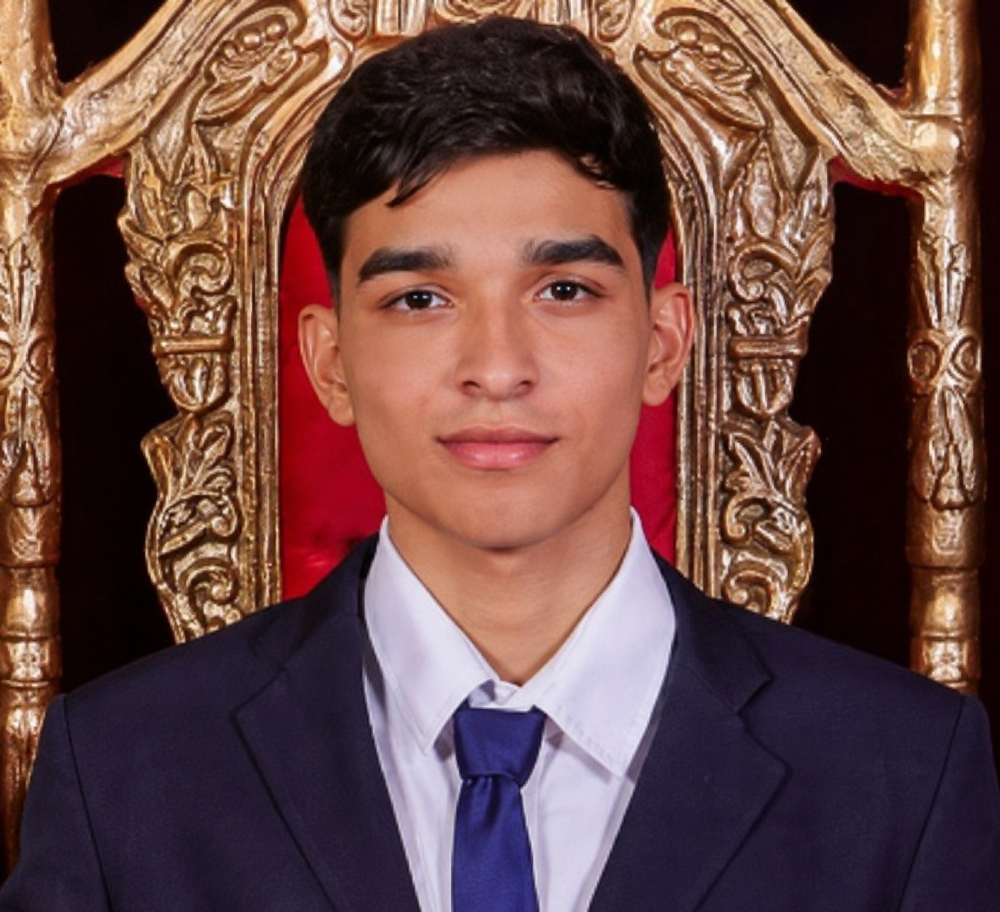
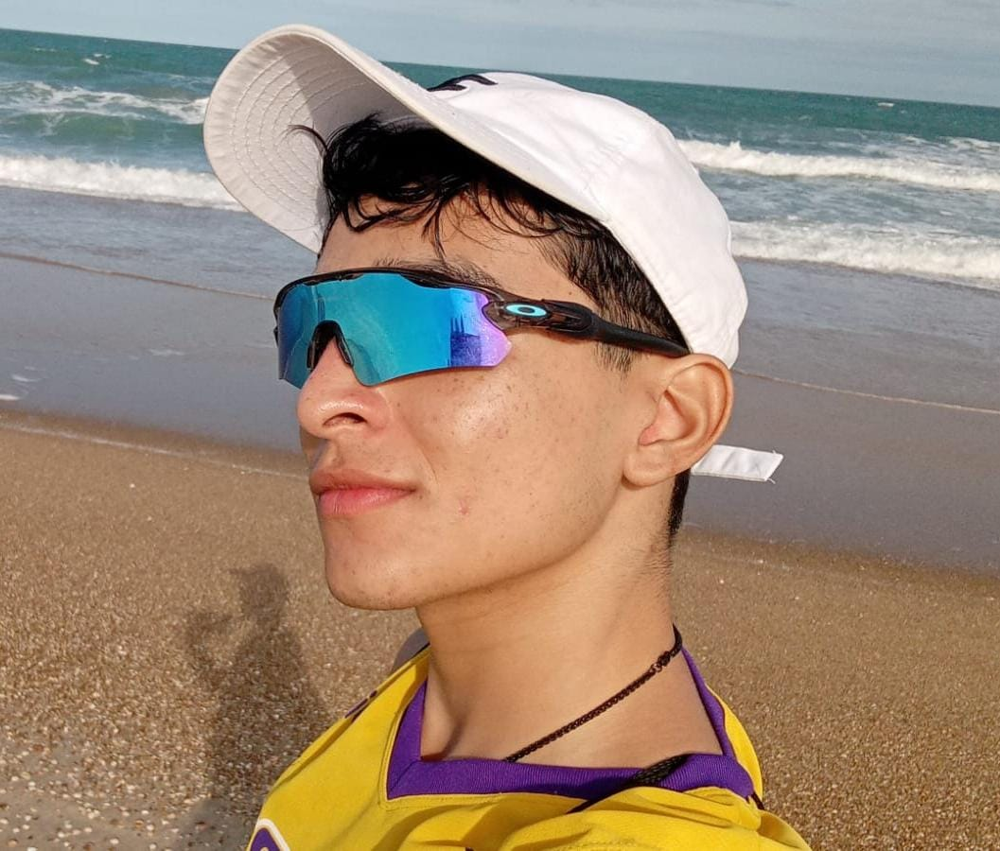
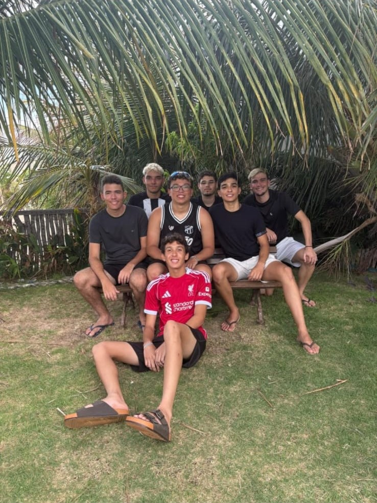
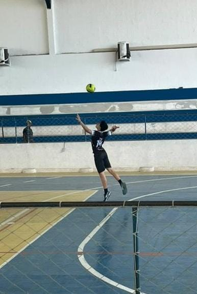
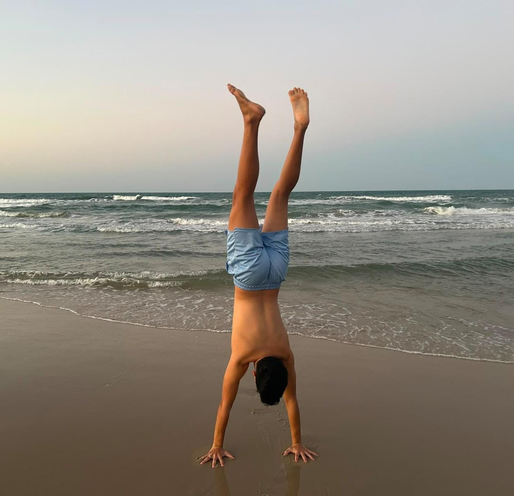
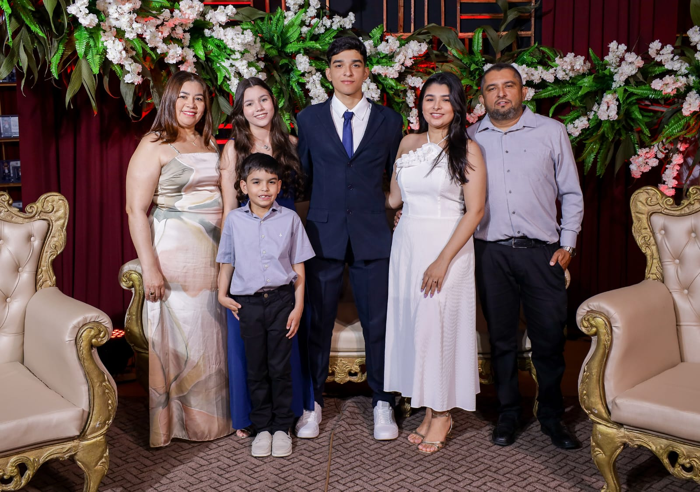

Sobre mim

Sou o Sávio Vinicius Cavalcante Lima, nascido e criado em Limoeiro do Norte, no interior do Ceará. Nunca coloquei um teto para o quão longe quero chegar. Sou o tipo de pessoa que está sempre em busca de novas habilidades e conhecimentos, porque acredito que o aprendizado contínuo é o que traz resultado. Hoje, curso Engenharia de Software na UFC, sabendo que esse é apenas o começo do que quero construir.
Hobbies





Eu valorizo bastante minha liberdade e estar em movimento. Cresci praticando esportes, então futebol, basquete, handebol e natação sempre fizeram parte da minha vida. Quando preciso recarregar as energias, o que eu mais gosto de fazer é ir para a praia, viajar ou simplesmente aproveitar um tempo de qualidade com a minha família e meus amigos. Já para dar uma desacelerada na rotina, passo boas horas lendo e sou fascinado por descobrir novas histórias e explorar diferentes mitologias.
Curso de Graduação
Atualmente curso Engenharia de Software na Universidade Federal do Ceará (UFC), buscando sempre evoluir profissionalmente e expandir meus conhecimentos técnicos na área de tecnologia.
Experiências
Minha bagagem prática hoje é o resultado da união entre a minha vivência acadêmica e os meus projetos independentes. No curso de Engenharia de Software, venho construindo uma base sólida em lógica, algoritmos e resolução de problemas, já tendo contato prático com linguagens como C, Python e Java. Em paralelo, trabalho bastante com design para redes sociais, artes esportivas e edição de vídeo e imagem. Tudo isso me ajuda a ter uma visão muito mais completa de qualquer projeto.